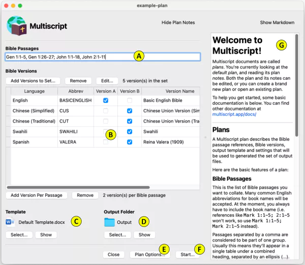

Multiscript Documentation
Plan files
Multiscript documents are called plans. A Multiscript plan
describes the Bible passage references, Bible versions, output
template and settings that will be used to generated the set of
output files.
Here’s an example Multiscript plan:

Here are the basic features of a plan:
A - Bible Passages
This is the list of Bible passages you want to collate. Many
common English abbreviations for book names will be accepted. At
the moment, you always have to include the book name (i.e.
references like Mark 1:1-5; 2:1-5 won’t work, so use Mark 1:1-5;
Mark 2:1-5 instead).
Passages separated by a comma are considered to be part of one
group. Usually this means they’ll appear in a single table under a
combined heading, separated by continuation text (which by default
is an ellipsis).
Passages separated by a semicolon are considered to be in separate
groups (i.e. separate tables).
B - Bible Versions
This is the list of versions you wish to combine. Click Add
Versions to Set to add versions to the plan.
The version columns (i.e. Version A, Version B etc.) control how
the versions are combined. It’s easiest to think of each column in
this list as a Bible passage column in your output document. You
then tick which versions you want to appear in each column.
In the screenshot above, the English version is the only ticked
version in column A, which means it will appear in every output
document. All the other versions are ticked in column B. This will
result in a series of files being generated, each of which have
English and one of the other versions included per file.
You can have any number of columns (currently 1 to 26), and
Multiscript will generate every possible combination for the
versions and column ticks you enter.
You can double-click on any version to edit its labels, preferred
font etc.
C - Template
This is the template document that Multiscript will use to
generate each output file.
D - Output Folder
This is the folder in which the output files will be generated.
E - Plan Options
Click this button to adjust various settings specific to this plan
file.
F - Start
Click this button to execute the plan, which will generate the
output files.
G - Plan Notes
You can write any notes you wish to include with the plan here. (The
notes are stored in Markdown format.)
Editing a template
Here’s some help for editing a template document:
Tags
The template file should include any of the following tags. Around
the tags you can include any other content that you like.
Styles
If your template is a Microsoft Word document, Multiscript will
attempt to apply the following formatting styles. If you create
styles with these names, you can control the formatting of the
Multiscript output.
Fonts
You can specify a font name and font size for each version, that
will be applied to the Bible text (overriding the MSC_Paragraph
style). The
Google Noto project
has fonts that cover a large number of the world’s languages and
scripts.